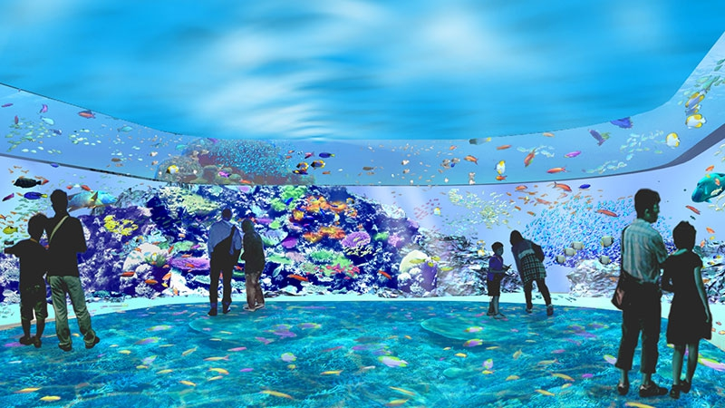

Xpark為台灣首座新都會型水生公園。將生活在地球上各種地域的生物們的環境，透過空間演出與科技的融合，加以忠實的重現。在連氣溫、濕度、味道及聲音都經過縝密計算的空間裡，從天花板到地坪、延伸至水槽的影像演出呈現出360°具魄力的沉浸式空間。來訪的遊客並非單純透過壓克力玻璃觀賞生物，而是彷彿真的身歷其境，可以使用五感體驗各真實場景。主角，是生活在那裡的生物們，隨環境變遷而演變進化的生物們的不思議，從全方位各種角度將其魅力性襯托出來的環境演出也是一大特徵。
購票請先至KKday網站預購
2020.10.18

對於本館生物照護疑慮之聲明
2020.10.15

Xpark未來會強化在社群媒體及現場活動上的教育傳播功能，避免有心人士於其他管道營造本館漠視動物權利之錯誤印象。針對各類不實指控，如發生傷及我方商譽行為，本館將採取法律途徑以維護自身權益。 最後，再次感謝所有喜歡動物的每一位民眾對生物們的關心，各位的意見Xpark都不會漠視，Xpark的建立目標，承襲株式會社橫浜八景島的經營理念─透過生物散播笑容與感動到全世界，同時也期望可以透過水族館建立起親近海洋的管道，逐步發現海洋生物的困境，並在未來一點一滴的累積化成正能量，反饋到自然環境中盡一份心力。
新冠肺炎疫情因應措施
2020.9.15

體溫測量 實施紅外線體溫量測儀進行體溫監測。若體溫過高則使用非接觸式體溫計重測，若高於攝氏37.5度則得拒絕入館。 消毒對策 遊客入館前需消毒手部並配戴口罩 觸摸頻率高的地方(如樓梯、電扶梯的扶手、電梯按鈕、化粧室等)每2小時消毒清潔一次。 入口處及館內複數重點處會設置消毒液提供遊客使用。(如電梯前、各樓層化粧室、館內Cafe、紀念品店、哺乳室、救護中心等) 入館管制 導入時段性入館措施，以便讓遊客確保適當之社交距離。關於每日、每時段的入場上限人數，將遵循開幕時的「防疫新生活運動」之規定。
小企鵝平安誕生惹~
2020.9.02

企鵝仙女乾媽們說，非常驚喜也感到很意外，蒲公英(母)跟三葉草(父)誕下新生命，小企鵝於2020年6月22日出生，體重100公克，出生兩個月之後體重已經到了3.65公斤。 據乾媽的觀察表示，小企鵝應該是男生，也是一個非常有膽量的好奇寶寶，第一天下水隔天就跑到對面的水域去玩耍，父母親目前都還未真的到對面去，做到了連成年企鵝都很難做到的事情。
小企鵝誕生
Xpark麥哲倫家有喜事，小企鵝健康誕生！邀請你一起幫小企鵝取名，有機會拿到Xpark專屬小禮物！2020.10.20

浪漫特調咖啡
期間限定開催！Xpark夜間入場獨享浪漫企鵝戀人拿鐵2020.10.10

當季特展
海洋因塑（素）聯合展2020.10.01

當季特展
海洋生態攝影巡迴展2020.9.20

我們開幕囉!
台灣獨創「Xpark x UNIQLO
T恤入場券」歡慶Xpark開幕！2020.10.10

Xpark誠摯的邀請台灣民眾參與小企鵝命名活動，還有機會獲得超稀有的小禮物唷！ 活動辦法： 1.小企鵝命名提案募集日為2020/10/12-2020/10/26 2.命名中選者將可獲得〝超稀有〞禮物一份，還有其他小禮物喔！
專屬夜晚的行程，如今又多加一項啦！ 自10/1早上10:00起可在KKday訂購限定夜間雙人套票(18：00場次)，平日每日限量25組，即可於入場後兌換期間限定的企鵝戀人拉花拿鐵，戀人咖啡只送不賣，僅限網路上進行預購。 ●活動期間：2020/10/12~ 2020/11/30 ●購票期間：2020/10/01 10：00~2020/11/29 14：59 讓溫暖的咖啡為兩人的愛情升溫，讓企鵝為你的回憶加分！
本特展串連家、海洋、以及海洋廢棄物議題，包含從國立臺灣科學教育館移展的「海呀！我的家」特展，並規劃加入與國立臺灣師範大學、中國化學會合作辦理「化學元素週期表」特展，將生活中的化學元素概念，除了呈現垃圾過量而造成海洋甚至是地球所面臨的問題，也需讓觀展民眾了解海洋減塑問題外，化學元素於海洋與生活的關係，進而關心化學及海洋環境等議題。
本展以海生館豐富多樣的水下攝影作品及出版圖鑑收錄之海洋生態影像成果，做為本展資料基礎，展區分為「可愛小丑魚」、「珊瑚的線條」及海生館影像區，張張影像都代表了海生館在海洋生態保育的軌跡及海洋教育發展的歷程，並專區介紹臺灣周邊海域(墾丁、綠島、蘭嶼)的優質潛點，搭配展出水下攝影器材及潛水裝備，藉以宣導安全潛水。
Xpark x UNIQLO桃園指定店舖滿額贈紀念T恤（含門票）活動。Xpark與UNIQLO共同開發獨創「Xpark x UNIQLO T恤入場券 (T-Shirt Ticket)」。大人、小孩款為不同的Xpark獨創圖案設計，並於T恤上印有Xpark入場券QRCODE。顧客於UNIQLO指定店鋪，購買3,000元以上商品(需包含大人小孩商品)，即可獲得乙件。穿著/持有「Xpark x UNIQLO T恤入場券 (T-Shirt Ticket)」，即可入場Xpark。
 最新消息
最新消息